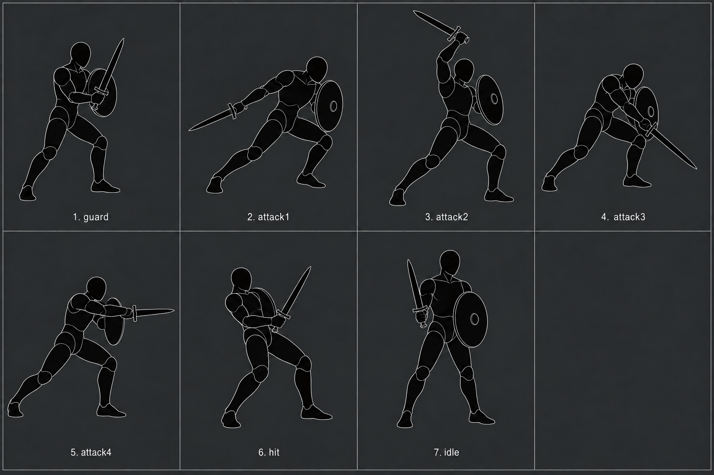
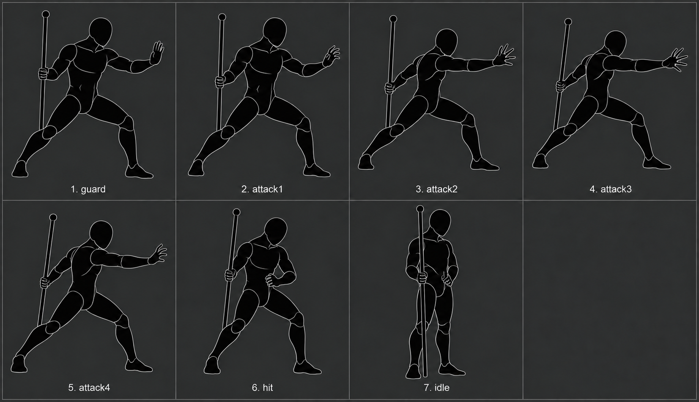

ASHENSPIRE · KEYFRAME REFERENCES
Shape first. Anchors second.
Existing class poses redrawn as complete humanoid-and-weapon silhouettes. 28 baseline poses · reference review · unmerged.
Review regenerated seven-frame attack sequences →
● Weapon handle / tip● Main-hand L / R● Offhand L / R
Combined silhouette
Original keyframe
Weapon shapes are part of the black drawing. Overlays annotate the drawing; they do not reposition weapons or hands. Hand-edge coordinates are manually traced review estimates. L/R are local to each hand.
All current poses
First equipment variations
Combined shape studies · seven poses each · anchor calibration pending.
Reaver · sword and shield

Herald · staff and free casting hand

Baseline scope and next equipment combinations
Guard, attack1–4, hit and idle are source pose names, not a new seven-frame attack loop. Menu, detail and portrait artwork remain separate.
Reaver: two-handed sword. Rogue: twin daggers. Starseer: staff. Herald: empty-hand casting, matching the source.
The first sword/shield and equipped-casting variations are above. Remaining families include sword + focus, one-handed and two-handed heavy weapons, polearms, bow, shield bash and dual-focus casting. Layered body/weapon/hand assets follow the validated references.
Earlier equipment animation studies